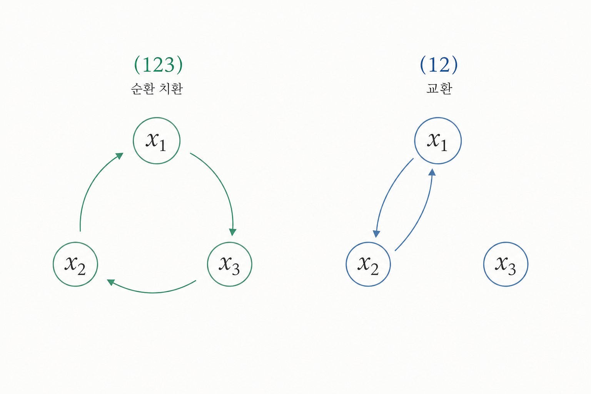
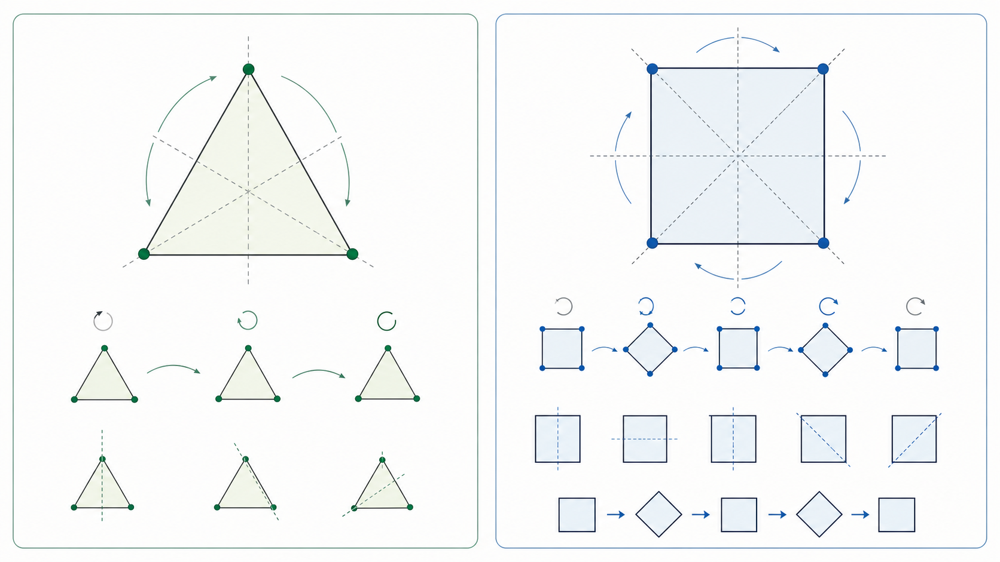

제2장: 군론의 기원 — 결투 전날 밤, 촛불 아래 쓴 방정식의 유언
1. 부러진 뼈를 맞추듯: 알 자브르(Al-Jabr)와 아라베스크
‘대수학(algebra)’의 어원을 따라가면 9세기 바그다드에 닿습니다. 알 콰리즈미가 사용한 ‘알 자브르(al-jabr)’는 본래 부러진 것을 다시 맞추어 원형을 회복한다는 뜻을 가집니다. 방정식을 정리하고 미지수를 고립시키는 과정에 이런 이름이 붙었다는 사실은 의미심장합니다. 대수학은 처음부터 흩어진 관계를 다시 균형 잡힌 형태로 복원하는 기술이었던 셈입니다.
비슷한 시대의 이슬람 기하학 장식에서도 우리는 같은 정신을 봅니다. 반복, 회전, 반사, 평행이동으로 평면을 채우는 아라베스크 문양은 단순한 장식이 아니라, 허용된 변환들 속에서 질서를 유지하는 구조였습니다. 오늘의 언어로 말하면 이는 평면의 대칭과 주기적 패턴에 대한 직관이며, 훗날 결정학과 평면 대칭군으로 더 엄밀하게 정리될 감각의 선취라 할 수 있습니다. 대수학이 식의 균형을 다뤘다면, 기하학적 장식은 그 균형이 공간 위에서 어떻게 반복되는지를 보여 주었습니다.
2. 동양의 마방진과 조합의 미학
같은 시기 동아시아에서는 또 다른 형태의 대칭 감각이 자라나고 있었습니다. 《구장산술》과 마방진(magic square)은 수를 단순히 계산하는 대상이 아니라, 배열 속 관계를 통해 균형을 드러내는 대상으로 다룹니다. 가로, 세로, 대각선의 합이 같아지는 마방진은 대수적 해법이라기보다 조합적 구조의 승리입니다.
이런 예가 곧장 현대 군론으로 이어지는 것은 아닙니다. 하지만 중요한 것은 사고방식입니다. 대칭은 꼭 방정식의 형태로만 나타나지 않습니다. 어떤 배치가 허용되고 어떤 배치가 금지되는가, 무엇을 바꾸어도 전체 구조가 유지되는가를 보는 태도 역시 대칭의 일부입니다. 물리학에서 상태 배열과 가능성 공간을 다루는 감각은 이미 이런 오래된 수학적 미학과 통하고 있습니다.
3. 5차 방정식이라는 담장과 갈루아
16세기 이후 수학자들은 2차, 3차, 4차 방정식의 일반해를 차례로 얻으며 자신감을 키웠습니다. 그러니 다음 질문은 당연했습니다. 5차도 같은 방식으로 풀 수 있지 않을까? 그러나 오래도록 아무도 일반적인 근의 공식을 찾아내지 못했습니다. 여기서 갈루아의 시선은 문제 자체를 바꾸어 놓습니다. "우리가 공식을 아직 못 찾은 것인가, 아니면 애초에 그런 공식이 존재하지 않는가?"
갈루아는 방정식의 해를 하나씩 계산하는 대신, 해들 사이의 치환(permutation)이 어떤 구조를 이루는지 보았습니다. 이것이 결정적 전환입니다. 그는 어떤 방정식이 근호로 풀릴 수 있는지는 계수 자체보다, 해들 사이 대칭 구조가 얼마나 잘 분해되는가에 달려 있다는 사실을 밝혔습니다. 수학의 관심이 "답이 무엇인가"에서 "답들의 구조가 무엇인가"로 이동한 순간이었습니다.
이 발상은 물리학자에게도 낯설지 않습니다. 우리는 입자의 위치나 속도를 하나하나 적는 대신, 어떤 변환이 허용되고 어떤 상태들이 서로 연결되는지를 보는 데 익숙합니다. 갈루아는 그 태도를 방정식의 세계에 처음으로 밀어 넣었습니다. 그리고 바로 그 지점에서 군론이 태어납니다.
3.5 치환은 왜 중요한가
치환이 중요하다는 말이 처음엔 추상적으로 들릴 수 있습니다. 하지만 해가 세 개 있다고 생각해 보자. 우리는 그것들을 $x_1, x_2, x_3$라고 부를 수 있습니다. 어떤 연산이 이 셋을
처럼 돌려 놓는다면, 이는 단순한 이름 바꾸기가 아니라 해들의 구조를 보존하는 변환입니다. 순열 표기로는 이것을 $(123)$처럼 쓸 수 있습니다.
다른 변환은 두 해만 맞바꾸고 하나는 그대로 둘 수 있습니다. 예를 들어
는 $(12)$라고 씁니다. 중요한 것은 각 해의 숫자값이 아니라, 어떤 교환이 허용될 때 전체 관계식이 그대로 남는가입니다. 갈루아는 바로 이 허용된 치환들의 집합을 보았고, 방정식의 풀림 가능성이 이 집합의 구조에 달려 있음을 보았습니다.
즉, 치환은 단순한 장난이 아니라 구조의 진단 도구입니다. 무엇이 서로 교환 가능하고, 무엇은 절대 섞일 수 없는가를 보면 계의 대칭성이 드러납니다. 물리학에서 상태를 분류할 때도 같은 감각이 반복됩니다. 전자들을 서로 바꾸거나, 공간축을 회전시키거나, 내부 자유도를 변환했을 때 어떤 구조가 살아남는지를 보는 일 말입니다.

x_1, x_2, x_3의 자리바꿈이 단순한 이름 교환이 아니라 구조를 보존하는 변환의 문법이라는 점을 보여 준다.손에 조금 더 익히기 위해 짧은 합성 하나만 보자. 먼저 $(12)$를 하고 그다음 $(23)$을 한다고 해 보자. 그러면 $1$은 먼저 $2$로 간 뒤 다시 $3$으로 가고, $2$는 $1$로 가며, $3$은 $2$로 간다. 최종 결과는
즉 $(132)$이다. 이런 계산은 사소해 보이지만 중요하다. 치환은 단순한 이름표가 아니라 실제로 합성되고, 그 합성 규칙이 방정식의 대칭 구조를 드러내기 때문이다. 군론은 바로 이런 "조작의 계산법"을 추상화한 언어다.
4. 군(Group)의 수학적 공리 — 대칭의 문법
갈루아가 문을 열어젖힌 뒤, 수학자들은 대칭을 더 추상적으로 다루기 시작했습니다. 그 결과 태어난 것이 군(group)입니다. 군은 어떤 대상이 아니라, 대칭 조작들이 서로 어떻게 결합되는가를 기록하는 문법입니다. 핵심 공리는 네 가지뿐입니다.
- 닫힘(Closure): 두 대칭 조작의 합성은 그 대칭군의 일부다.
- 결합법칙(Associativity): 조작의 순서보다 합성의 구조가 중요하다.
- 항등원(Identity): 아무것도 하지 않는 조작은 대칭의 기본이다.
- 역원(Inverse): 모든 대칭 조작은 되돌릴 수 있다.
이 네 가지는 너무 단순해 보여서 처음에는 별 감흥이 없을 수도 있습니다. 하지만 물리학에서는 바로 이 단순한 공리들이 회전군, 로렌츠 군, 게이지군 같은 거대한 구조들의 공통 문법이 됩니다. 서로 전혀 다른 현상들이 같은 수학적 문장으로 읽히기 시작하는 지점이 바로 여기입니다.
4.5 정삼각형 하나로 보는 군의 네 공리
가장 익숙한 예로 정삼각형을 생각해 봅시다. 정삼각형은 $120^\circ$, $240^\circ$ 회전과 세 개의 반사 대칭을 가집니다. 이 조작들을 모두 모으면 여섯 개의 원소로 이루어진 집합이 생기고, 이것이 정삼각형의 대칭군입니다.
닫힘은 쉽게 보입니다. $120^\circ$ 회전을 두 번 하면 $240^\circ$ 회전이 되니 여전히 같은 집합 안에 있습니다. 반사를 두 번 하면 항등원이나 다른 회전이 될 수 있어도, 어쨌든 다시 대칭 조작 안에 머뭅니다. 결합법칙은 세 조작을 연달아 할 때 괄호를 어디에 치든 최종 결과가 같다는 뜻입니다. 항등원은 삼각형을 그대로 두는 "아무것도 하지 않기"이고, 역원은 $120^\circ$ 회전의 역원이 $240^\circ$ 회전이라는 식으로 눈앞에서 확인됩니다.
여기서 군의 감각이 살아납니다. 군은 기호 놀이가 아니라, 실제 도형을 움직이는 조작들의 문법입니다. 정삼각형을 손으로 돌려 보거나 뒤집어 보면, 공리 네 개가 추상 규칙이 아니라 대칭이 제대로 된 계산 체계를 이루기 위한 최소 조건이라는 점이 금방 드러납니다.
왜 하필 이 네 공리면 충분할까? 닫힘이 없으면 조작을 한 번 하고 나서 아예 체계 바깥으로 튀어나가 버리고, 결합법칙이 없으면 여러 단계를 묶어 계산할 수 없으며, 항등원이 없으면 "아무 변화 없음"이라는 기준점이 사라지고, 역원이 없으면 한 조작을 되돌릴 수 없다. 즉, 이 네 조건은 아름답게 꾸민 형식 규칙이 아니라, 대칭을 안정된 계산 체계로 다루기 위해 필요한 최소 장치들이다.
5. 정사각형, 순서, 그리고 비가환성
정사각형은 한 걸음 더 나아가게 해 줍니다. 정사각형에는 $90^\circ$, $180^\circ$, $270^\circ$ 회전과 네 개의 반사가 있습니다. 여기서 흥미로운 것은 조작의 순서가 중요해질 수 있다는 점입니다. 예를 들어 먼저 반사하고 그다음 회전하는 것과, 먼저 회전하고 그다음 반사하는 것은 같은 결과를 주지 않을 수 있습니다.
이것이 바로 비가환성(non-commutativity)입니다. 즉,
가 될 수 있다는 뜻입니다. 처음에는 이것이 사소한 불편처럼 보일 수 있지만, 현대 물리학에서는 오히려 핵심 특징입니다. 3차원 회전군 SO(3) 자체도 일반적으로 비가환이고, 양자역학의 각운동량 연산자들도 서로 비가환입니다. 표준 모형의 SU(2), SU(3) 역시 비가환 구조를 갖습니다.
반대로 우리가 일상적으로 더 익숙한 덧셈은 가환적입니다. $2+3$과 $3+2$는 같습니다. 그러나 대칭 조작의 세계에서는 순서가 결과를 바꾸는 경우가 흔합니다. 이 차이를 이해하는 순간, 군론은 단순한 분류표가 아니라 조작의 순서까지 포함한 동역학적 문법으로 느껴지기 시작합니다.
정사각형으로 아주 구체적으로 말하면, 먼저 세로축 반사를 하고 그다음 $90^\circ$ 회전을 하는 경우와, 먼저 $90^\circ$ 회전을 하고 그다음 세로축 반사를 하는 경우는 꼭짓점의 배치를 서로 다르게 만든다. 같은 두 조작을 썼는데도 순서가 결과를 갈라놓는 것이다. 물리학에서 회전 연산자나 게이지 변환이 비가환적이라는 말도 바로 이런 감각의 고차원판이다. "무엇을 하느냐"만큼 "어떤 순서로 하느냐"도 구조의 일부라는 뜻이다.

5.5 대칭의 지도: 왜 기호들은 숫자를 달고 있는가
앞으로 나올 물리학의 대성당은 U(1), SU(2), SU(3), SO(3) 같은 기호들로 가득합니다. 이것들은 난해한 암호가 아니라, 어떤 종류의 상태공간에서 어떤 형태를 보존하는 변환들을 묶어 놓은 이름표입니다.
- `O`(orthogonal)는 실수 공간에서 내적을 보존하는 변환입니다.
- `U`(unitary)는 복소수 공간에서 내적을 보존하는 변환입니다.
- `S`(special)는 그중에서도 행렬식이 1인, 즉 뒤집힘을 포함하지 않는 부분을 가리킵니다.
- 괄호 안의 숫자는 그 군이 작용하는 공간의 차원을 알려 줍니다.
| 기호 | 의미 | 물리적 대상 |
|---|---|---|
| $U(1)$ | 1차원 복소 위상 변환 | 전자기적 위상, 전하 |
| $SU(2)$ | 2차원 복소 공간의 특수 유니터리 변환 | 스핀, 전기약 이론의 일부 |
| $SU(3)$ | 3차원 복소 공간의 특수 유니터리 변환 | 쿼크의 색대칭, 강력 |
| $SO(3)$ | 3차원 실공간의 회전 | 일상적인 공간 회전 |
예를 들어 SO(3)은 3차원 공간 회전의 군입니다. 반면 U(1)은 복소수 위상을 바꾸는 군이므로, 눈에 보이는 도형을 돌리는 것과는 다르게 "상태의 위상"을 바꾸는 조작과 연결됩니다. SU(2)는 처음에는 더 추상적으로 보이지만, 제3장과 제4장에서 스핀 1/2와 회전 표현을 다룰 때 그 중요성이 분명해집니다. 즉, 같은 군론이라도 어떤 공간에서 어떤 양을 보존하는지에 따라 물리적 의미가 달라집니다.
이 기호들을 처음 볼 때 중요한 것은 정의를 외우는 일이 아닙니다. 오히려 "이 군은 무엇을 바꾸고, 무엇을 그대로 두는가?"를 묻는 습관이 더 중요합니다. 군 기호는 대칭의 이름표이고, 물리학자는 그 이름표를 보고 계가 어떤 자유도 위에서 어떻게 조직되는지를 읽습니다.
빠르게 다시 훑어볼 수 있도록 정리하면 다음과 같습니다.
| 기호 | 보존하는 구조 | 작용 공간 | 주로 나오는 장 | 물리 예시 |
|---|---|---|---|---|
SO(3) | 3차원 실공간의 길이와 각도 | 실공간 회전 | 2장, 3장, 4장 | 일상적 회전, 각운동량 |
SU(2) | 2차원 복소 공간의 유니터리 구조와 행렬식 1 | 스핀 상태 공간 | 2장, 4장, 5장 | 스핀 1/2, 전기약 이론 |
U(1) | 복소 위상의 크기 보존 | 1차원 복소 위상 | 2장, 5장 | 전자기적 위상, 전하 |
SU(3) | 3차원 복소 공간의 유니터리 구조와 행렬식 1 | 색 공간 | 2장, 5장 | 강한 상호작용, 색대칭 |
6. 물리덕후의 관점: 왜 갈루아인가?
우리는 1장에서 보존 법칙이 대칭에서 나온다는 사실을 보았습니다. 그렇다면 자연스럽게 다음 질문이 생깁니다. "그 대칭 자체는 어떤 언어로 기술하는가?" 갈루아의 유산인 군론은 바로 그 질문에 대한 답입니다. 군론은 보존 법칙을 직접 계산해 주는 도구이기 전에, 어떤 상태들이 서로 연관되고 어떤 변환이 허용되는가를 조직하는 언어입니다.
갈루아의 삶은 짧았지만, 그의 질문은 너무 멀리까지 뻗어 갔습니다. 5차 방정식의 운명을 묻는 문제에서 출발한 사유가 결국 원자 스펙트럼, 스핀, 시공간, 게이지 이론까지 연결되었으니 말입니다. 이제 우리는 이 언어를 들고 위그너의 장으로 넘어갈 수 있습니다. 거기서 군론은 더 이상 추상 대수학의 한 장이 아니라, 원자의 비밀을 읽는 실전 도구가 됩니다.
더 정확히 말하면, 갈루아는 물리학자에게 "계산하기 전에 구조를 보라"는 태도를 남겼습니다. 어떤 대상의 모든 성질을 하나씩 외우는 대신, 그 대상을 자기 자신으로 남겨 두는 변환들의 문법을 먼저 파악하라는 것입니다. 이 태도는 이후 뇌터, 위그너, 디랙, 게이지 이론으로 계속 이어집니다. 군론은 수학사의 한 장이 아니라, 현대 물리학 전체가 사고하는 기본 문장 형식입니다.